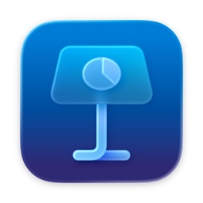

From messy notes to documents ready to hand in.
Klip turns notes, tables and math into clean documents you can keep editing. KlipOCR reads screenshots and scans into text you can use. Built for class, teaching, research and office work. Both run offline. No account needed.
Capture. Snip anything with one shortcut.
Convert. One copy works everywhere.
Paste. Press ⌘V. Keep editing.
Works where you write.
Copy once. Paste clean tables and math into every app on your Mac.

Made for school and office work.
Math you can edit
Math stays editable in Pages, Keynote, Word and LibreOffice. Anything tricky stays as plain text, so nothing gets lost.
Tables that stay tables
Rows and columns from notes or web pages paste as real tables you can edit, math included.
Copy once, paste anywhere
One copy covers Pages, Word and LibreOffice at once. Notes apps get clean plain text automatically.
Read text from pictures
KlipOCR turns screenshots and scans into text and tables, in reading order.
Works fully offline
Both apps run without internet. Your documents stay on your Mac. No account needed to start.
Simple controls
Menu-bar operation · text and math sizing · cleans stray markers [1] [^1] · fast, balanced and efficient modes · keeps pictures.
Your questions, answered.
Which Macs are supported?
Klip needs macOS 13 or later; KlipOCR needs macOS 14 or later. Both need Apple Silicon.
Does my work leave my Mac?
No. Both apps work fully offline. Nothing you copy or snip leaves your Mac, ever.
Can it read messy screenshots?
Yes for clear text and tables. Blurry or handwritten pages may need a quick fix after pasting.
What if some math won't convert?
You never lose it. Anything tricky stays as plain text you can fix by hand.
What about Obsidian, Typora or Bear?
They get clean plain text automatically at paste time. What you copied stays readable.
What can I use for free?
Klip: pastes up to 1000 characters, 21 free the first week, then 14 a week. KlipOCR: free snips with unlimited length, document mode locked.